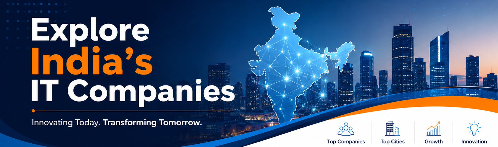

Explore India's IT Companies
PRODUCT AND SOFTWARE BASED COMPANIESABOUT
India is one of the fastest-growing information technology (IT) hubs in the world. The country's IT industry plays an important role in the global economy by providing software development, IT consulting, cloud computing, cybersecurity, artificial intelligence, and digital transformation services. Indian IT companies serve millions of customers across different countries and industries.
Chennai, Bangalore, and Hyderabad are among the leading technology cities in India. These cities are home to many well-known national and international IT companies that create innovative software solutions, develop advanced technologies, and provide employment opportunities to thousands of professionals every year.
Chennai is known for its strong software and business process management industry, with companies such as Zoho, Freshworks, TCS, and Infosys. Bangalore, often called the "Silicon Valley of India," is home to global technology giants like Google, Microsoft, Amazon, and Flipkart. Hyderabad has become a major technology destination with companies such as Microsoft, Google, Deloitte, and Tech Mahindra.
The purpose of this webpage is to introduce some of the top IT companies in India, highlight the major IT cities, and provide links to the official websites of these companies. This information helps students, job seekers, and technology enthusiasts learn more about India's growing IT industry and the organizations that contribute to innovation and economic development.